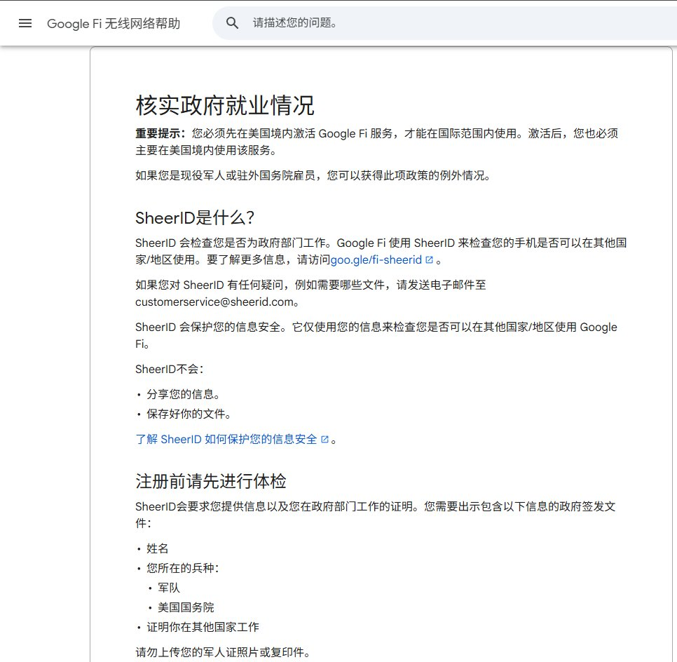
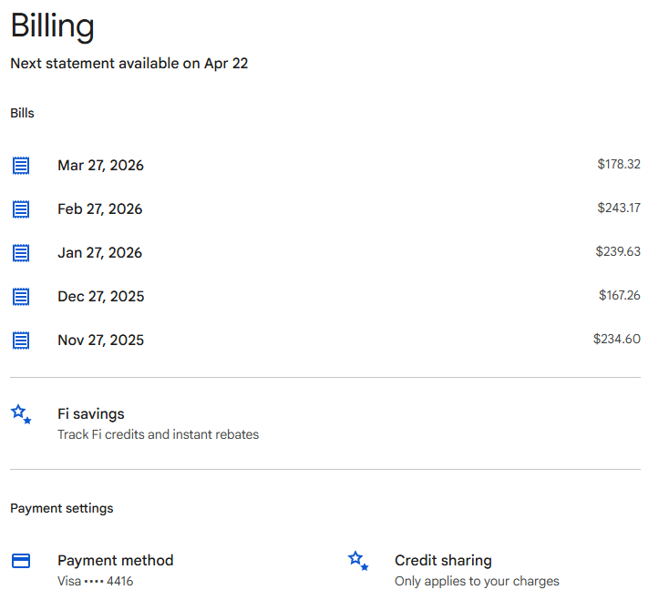
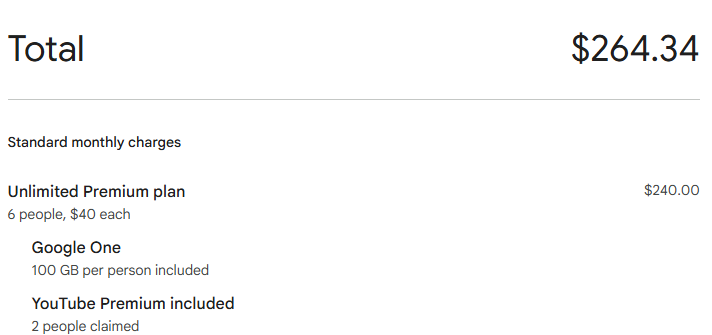
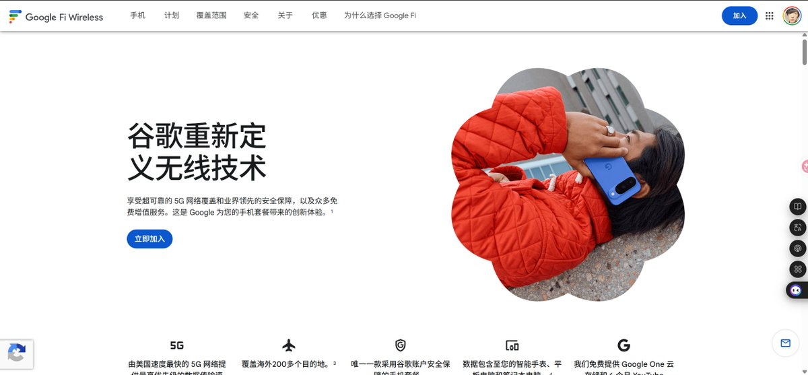

别误人子弟，Google Fi若不在美国境内呆1天，是无法激活国际漫游权限的。除非你能通过SheerID检查，就可以在其他国家/地区长期使用👉https://t.co/tVJhG7mqBm
最多1个家庭6个人（含Owner），每个月40刀含税10%大概是45刀/人的最终价格，只包流量、短信，语音需要走WiFi通话打甚至不如Google Voice
好处就是谷歌自家的，Leave Fi时可托管号码至GV，也可以转移到其他美国运营商如UltraMobile、T-Mobile等。总之这种暂停的你们就薅吧，就是因为有人开Unlimited Premium plan不给钱导致最高套餐不享受万圣节半价、后付费待遇（不过Fi买手机确实便宜且无锁

最多1个家庭6个人（含Owner），每个月40刀含税10%大概是45刀/人的最终价格，只包流量、短信，语音需要走WiFi通话打甚至不如Google Voice
好处就是谷歌自家的，Leave Fi时可托管号码至GV，也可以转移到其他美国运营商如UltraMobile、T-Mobile等。总之这种暂停的你们就薅吧，就是因为有人开Unlimited Premium plan不给钱导致最高套餐不享受万圣节半价、后付费待遇（不过Fi买手机确实便宜且无锁




龙哥又来给你们推荐实用的东西啦！！
还在为收验证码发愁？Google Fi，仅需0.1美元就能获得一个美国原生电话号码！大厂出品有保证，可以在APP上随时停止及重启服务，极低费用就能终生拥有一个美国真实电话号码了，这下注册美国任何APP就毫无压力了。 https://t.co/mpcjJX7g2y
还在为收验证码发愁？Google Fi，仅需0.1美元就能获得一个美国原生电话号码！大厂出品有保证，可以在APP上随时停止及重启服务，极低费用就能终生拥有一个美国真实电话号码了，这下注册美国任何APP就毫无压力了。 https://t.co/mpcjJX7g2y